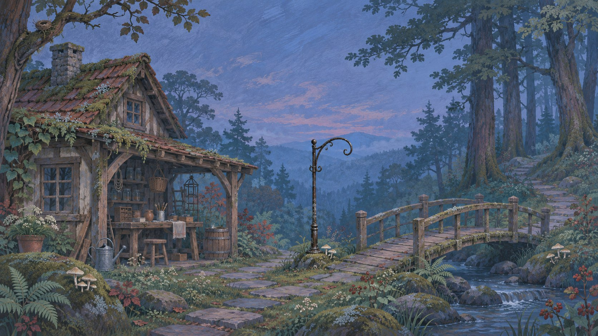

Beside the footbridge
A light for the bridge.
Six pieces of timber. Two drops of resin. Enough to make the dark a little smaller.

The footbridgeTonight's work
One lantern.
Make it at the bench, then hang it beside the bridge.
On the bench
- Timber
- 8pieces
- Resin
- 3drops
01Not made
Make the lantern
Uses 6 timber + 2 resin
02Not hung
Hang by the bridge
No extra resources
The bridge is waiting.
You have enough timber and resin to make one lantern.